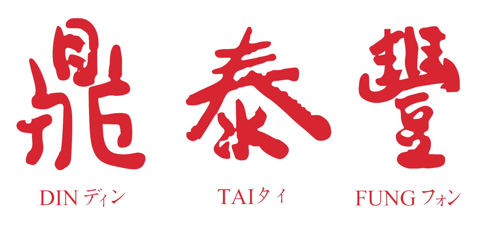
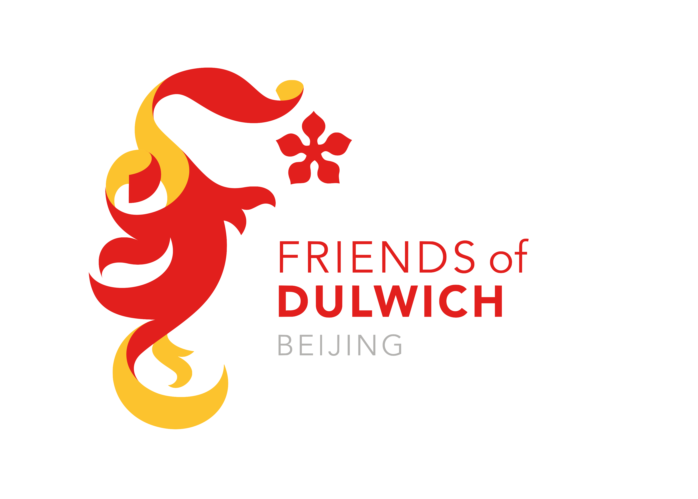
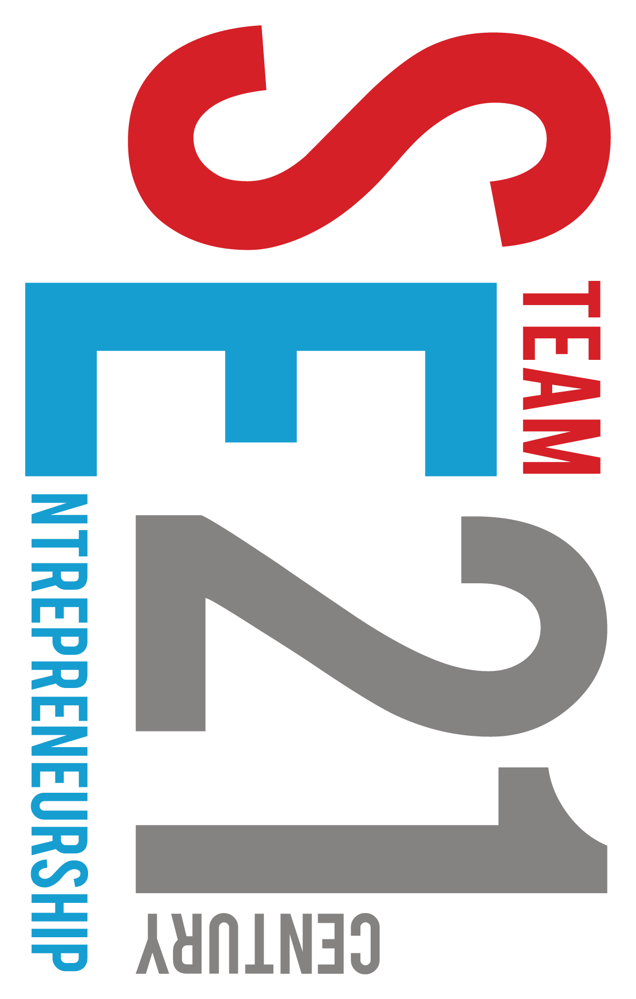
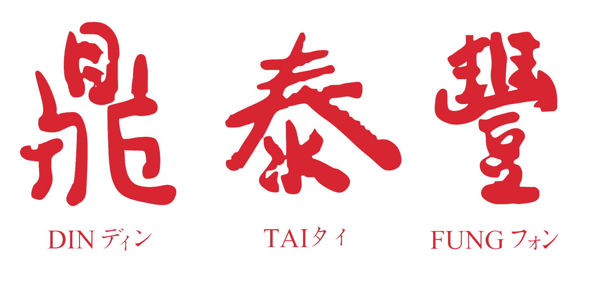
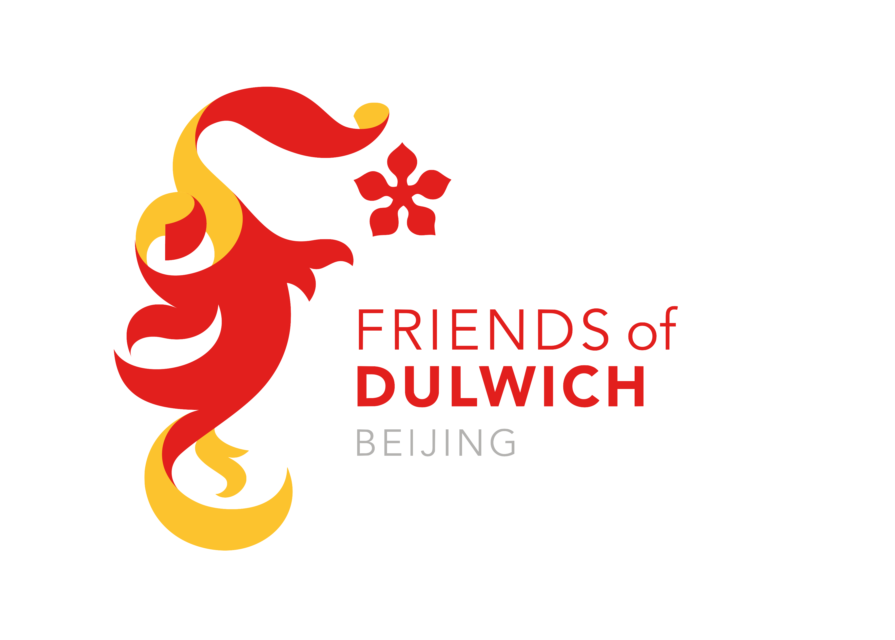
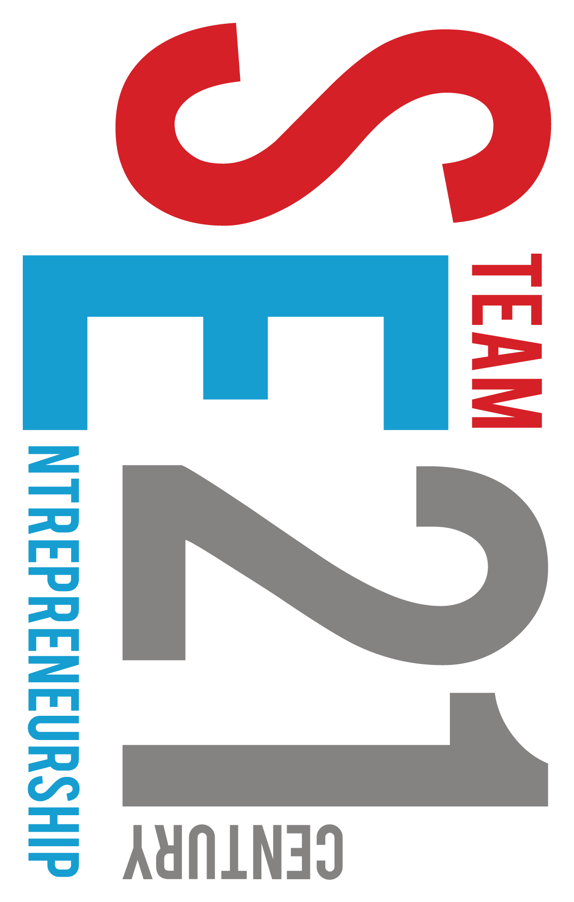

Helion is a FIRST Robotics team founded in 2018, and is entirely composed of high school and middle school students. We are located at Dulwich College Beijing, and our purpose is to successfully construct and program a competition robot that will compete in a FIRST Robotics regional. Our belief is that not only will we develop as individuals in the different fields of robotics, but we will also grow as a team. We are certain that Helion will provide an incredible experience for young students, and will teach them the perseverance and dedication needed to progress and suceed on the path of their choosing, taking the spirit of Helion Robotics with them as they go forward into their lives.

This robot, a labour of love from our programming and engineering teams, is a work of art. She can stretch, sit, spin, shift, smooth like silky pancake batter. In her free time, she loves playing ball and training with our drive team. She can move up to the second level of the HAB, place both balls and hatches onto the rockets, operate driver-controlled during the sandstorm period, and partially run by herself using complex, rPi-based vision systems
We aim to encourage the STEM subject to young students whilst inspiring and developing them by engaging them and teaching them essential engineering skills, entrepreneurial thinking, and problem-solving in programming, all while inspiring a new level of creative innovation.
The FIRST Robotics Competition (FRC) is an international high school robotics competition in which students compete using robots they made and try to score the most amount of points in a given situation. In the last few years it has gained widespread recognition from schools and universities around the world, with 81 million USD in scholarships being offered by a wide selection of universities and firms. Last year, FRC counted as many as 3,647 attending teams with more than 91,000 students and 25,000 mentors competing against each other from 27 different countries. Find out more about this competition here
the Dulwich College Beijing is an international school located in Beijing, China, with students of nationalities from around the world in its English curriculum. It is also the home and founding place of the Helion Robotics Team. Find out more about the school here
Community days are events in Dulwich College in which the spirit of STEM is inspired in younger students through robot showcases and similiar STEM demostrations. We hope to have these events as frequently as possible to encourage young students to follow the path of STEM in high school.
 




